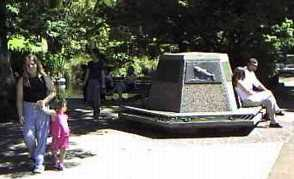
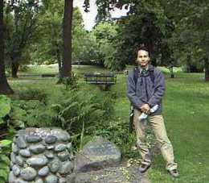
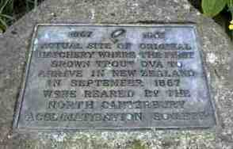

コラム
ニュージーランドへの鱒類の移入記念碑
オークランドとクライストチャーチには、ニュージーランドへの鱒類の移入記念碑があります。釣りに興味のある方で、時間のある方は一度訪れてみてはいかがでしょう。
ＮＺへ鱒類が最初に移入されたのは、1860～1880年代の事で、
ブラウントラウト ：タスマニアから（もとはイギリスから）、
レインボートラウト：北カリフォルニアから、
採取した卵を氷詰めにして50日ほどかけて船で運んだそうです。
それぞれの記念碑の場所は次のとおりです。
オークランド
オークランドドメインの中にある植物園の近くにダックポンドという池があります。この池の北側に、多角形のベンチをかたどった記念碑があり、その背もたれの部分に銘板が飾られています。

クライストチャーチ
ハグリーパークを流れるエイボン川沿い、クライストチャーチ病院とParkTce通りを結ぶ橋から上流側に歩き、エイボン川に架かる最初の橋を病院側に渡った付近、水飲み場の近くに記念銘板があります。


ちなみに、エイボン川ではブラウントラウトや大ウナギが泳ぐ姿を見ることができます。
コラム 目次へ
サイトマップ
ホームへ
お問い合わせ